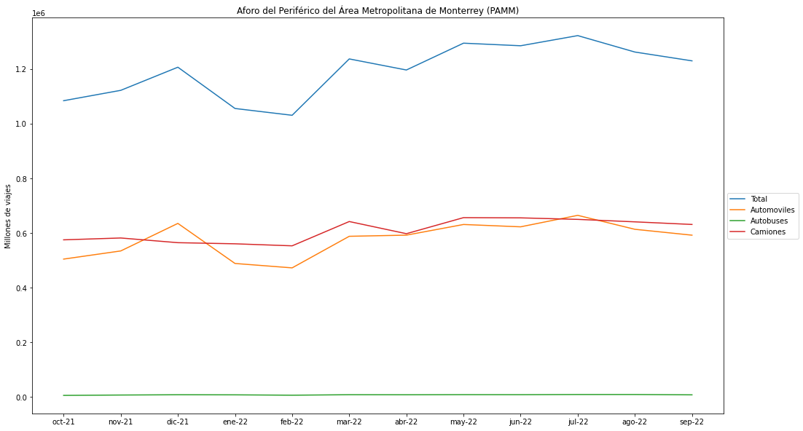

Transporte Público
Según los datos del Informe de gobierno, la afluencia total del sistema de transporte colectivo Metrorrey incrementó un 16.3% entre octubre del 2021 y septiembre del 2022. Del total de viajes realizados durante este año, el 50.2% se realizaron utilizando solamente el metro. Durante el último mes del período, la mayoría de los servicios vieron la afluencia caer.
Al analizar la afluencia diaria promedio durante el mismo periodo, se observa un incremento del 26.5%. Mientras que servicios como el Metro y el Transmetro tuvieron un incremento en actividad similar, del 27.8% y 32.8%, respectivamente, la afluencia del Metrobus tuvo una disminución de afluencia del 31.4%. Esta caída se puede observar durante los últimos dos meses del período.
A pesar del modesto crecimiento en la afluencia en el sistema Metrorrey, y el incremento a la tarifa de los distintos servicios, los ingresos generados disminuyeron a comparación del año anterior. Se puede ver cómo durante los meses de junio y julio 2022 los ingresos se encontraron en su punto más alto; esto a pesar de que durante esos meses la afluencia observó una reducción. Estos ingresos, sin embargo, no se encuentran desglosados y no es posible analizarlos por cada servicio.
Sobre la cantidad de autobuses disponibles en el AMM, el informe reporta que durante el último año hubo un incremento del 19% en la cantidad de autobuses panorámicos, impulsados casi exclusivamente por la adquisición de 370 autobuses de gas durante los últimos dos meses del período. El total de la flotilla de autobuses es de 3,069 al finalizar el primer año de gobierno.

Sin embargo, según una figura incluida en el reporte en la que se ilustra la cantidad de unidades desde el 2008 hasta el 2022, durante el último año hubo una reducción de 3,615 a las 3,069 unidades reportadas. Esto forma parte de una tendencia de disminución del total de los autobuses que dio inició en el 2016.
Autopistas
El informe también incluye información sobre la afluencia y los ingresos generados a través de la red estatal de autopistas. Con esta información podemos conocer que, a pesar de que representan el 67% de la afluencia total, los automóviles generan únicamente el 34% de los ingresos de la red de autopistas. Los camiones representan el 31% del aforo de las autopistas, pero generan el 64% de sus ingresos. Únicamente los autobuses tienen la misma representatividad en el aforo y los ingresos totales de la red, con un 2% en ambas mediciones.

El aforo en Periférico del Área Metropolitana de Monterrey (PAMM) incrementó 13% con respecto al año pasado. La afluencia total anual estuvo compuesta 50.9% por camiones, 48.4% automóviles, y 0.6% autobuses. Hubo un incremento de automóviles del 17%; de camiones del 9%; y de autobuses del 39%, pasando de representar el 0.47% de la afluencia total en octubre de 2021 al 0.58% en septiembre 2022.
A pesar de representar aproximadamente el mismo aforo que los automóviles, los ingresos generados por los camiones fueron más de tres veces aquellos de los automóviles. Los camiones compusieron el 76.7% de los $2,976,301,559 MXN generados durante el período octubre 2021 - septiembre 2022; los automóviles generaron el 22.6% durante el mismo período; los autobuses, al igual que los camiones, tuvieron una mayor representatividad en los ingresos que en su aforo, representando el 0.7% de los ingresos totales.
A diferencia del PAMM, en donde la mayor parte del tráfico se compone de camiones, el aforo de la Carretera Monterrey-Cadereyta está compuesto por automóviles en un 87.6%; camiones, 9.1%; y los autobuses ven la mayor representatividad entre las otras observaciones, con un 3.4% del aforo total.
Al igual que en el PAMM, sin embargo, tanto los camiones como los autobuses representan un mayor porcentaje de los ingresos en la autopista que su porcentaje del aforo total, mientras que los automóviles representan un menor porcentaje en los ingresos que en el aforo. Los ingresos de la AMC está compuesta por ingresos provenientes de automóviles en un 65.5%; camiones 29.3%; y autobuses 5.2%.
Contacto